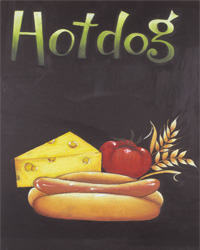
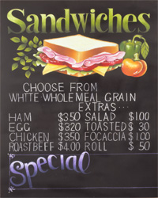

チョークアートってなに？
チョークアートとは黒板にパステルを使って描かれた絵の事です。歴史的にも看板として使われることが多い絵です。海外では、チョークアートの絵はパブやレストランで見ることが多く一般的にとも言えます。日本でも、イタリアンレストランや喫茶店などで見かけることがあるかと思います。
チョークアートは、今では看板としてだけでなく純粋に絵として飾られることもあります。また、趣味としてチョークアートに取り組む人も最近では増えてきました。

チョークアートの歴史
チョークアートは、もともと店先の看板として発展した商業アートです。アメリカ、イギリス、オーストラリアで比較的ポピュラーだといわれています。
チョークアートの起源はイギリスのパブが起源であるという説とオーストラリアが起源であるという説があります。
海外のお店で見かけるチョークアートは、文字だけでなく食材や飲み物の絵が色鮮やかに描かれています。